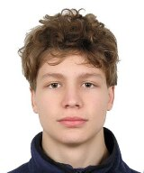

Profil
Som Dmytrii Ishchuk.
Študujem aplikovanú informatiku na FEI STU v Bratislave.

Zaujímam sa o informatiku, najmä o operačné systémy, Linux a počítačový hardvér. Baví ma zisťovať, ako počítače fungujú a ako spolupracuje ich hardvérová a softvérová časť.
Rád sa učím programovať a rozvíjam logické myslenie pomocou matematiky. Vo voľnom čase hrávam šach, videohry s kamarátmi a cestujem.
Na čo sa zameriavam
- Linux a operačné systémy
- Programovanie v Pythone
- Počítačový hardvér